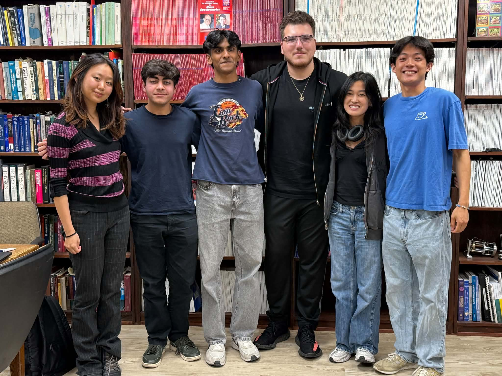
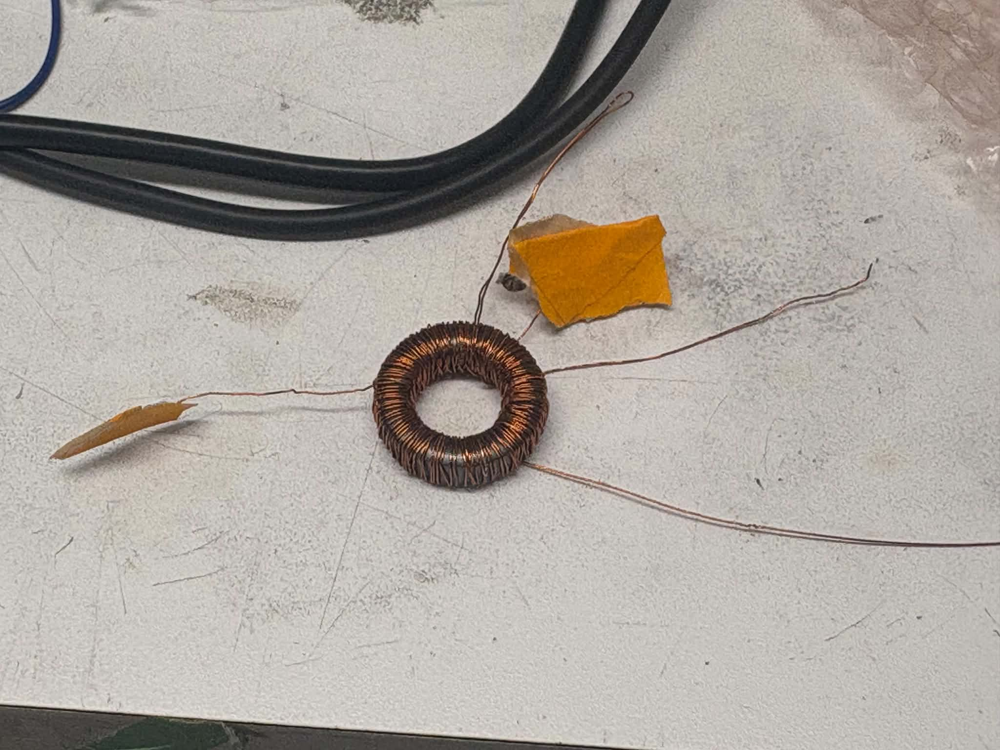
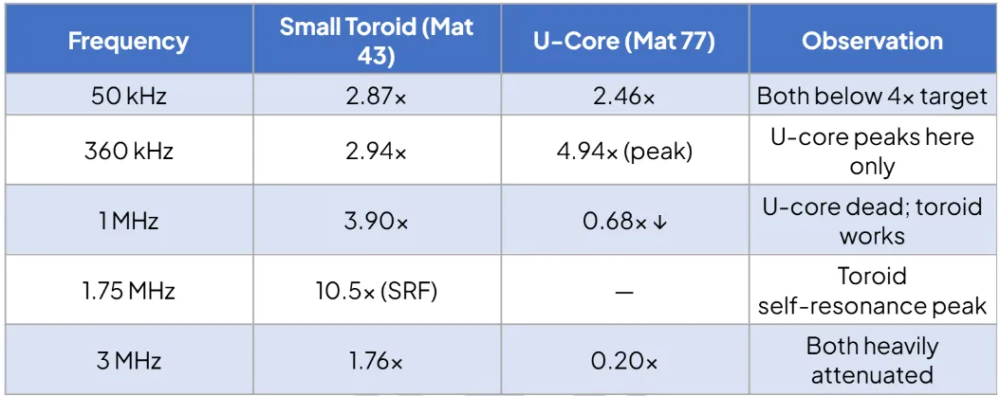

A kilovolt RF generator for a mass spectrometer. I custom-wound a toroid transformer that held 3.9x gain at 1 MHz where a U-core fell to 0.68x, and now own the high voltage resonator board.
Electrical Engineering Consultant · Evan R. Williams Research Group, via Engineering Solutions at Berkeley · Feb 2026 to Present

The goal
A mass spectrometer weighs molecules by trapping them in fast switching electric fields. Those fields need a clean, high voltage signal, up to 1.5 kV peak to peak on each output, swinging as fast as a million times a second. My part is the stage that builds that voltage.
What I did
Spring 2026: the custom transformer

Our team at the Williams Group is designing and constructing custom RF generators capable of producing waveforms of 1 to 1.5 kV peak to peak (kVpp) per output from 100 Hz to 10 MHz, able to drive capacitive loads up to 1 nF. The system has three components: a computer interface that synthesizes arbitrary waveforms and communicates with the host machine over SPI (requiring custom software drivers), a power amplifier built and tested from an existing design and modified for our application, and a center-tapped step-up transformer to produce two waveforms 180 degrees out of phase. The system as a whole is a team effort; my part is the transformer in the spring and the resonator board in the fall.
My work in the spring was the transformer. I started by benchmarking 5+ commercial step-up transformers against our original target specs (1:8 to 1:10 step-up ratio, 1.0 to 1.5 kVpp per output, 100 Hz to 10 MHz frequency range, center-tapped for 180 degree outputs, capacitive load), and found that none could satisfy turns ratio, voltage, and bandwidth together, so I moved to a custom-wound design. I selected toroidal cores over U-core geometries for lower leakage inductance, and chose Material 43 NiZn ferrite over MnZn for its insulating properties and suitability at RF frequencies. I calculated the minimum primary turn count needed to avoid core saturation at our lowest operating frequency, then wound and tested prototype transformers at a smaller turns ratio to validate the approach with a function generator swept across a wide frequency range.
The prototypes were a 22 mm Material 43 NiZn toroid and a Material 77 MnZn U-core, both wound at the same 20:80 (1:4) turns ratio and swept from 50 kHz to 3 MHz. At 1 MHz, the toroid delivered 3.9x step-up gain versus 0.68x for the U-core. At lower frequencies the U-core was ahead: at 360 kHz it peaked at 4.94x, where the toroid gave 2.94x. But the U-core rolls off before 1 MHz, to the point of stepping the signal down, while the toroid held a steady 2.9x to 3.9x from 50 kHz to 1 MHz, so the toroid was the better fit for the upper end of the band. At 1.75 MHz, the toroid's self-resonance spiked its gain to 10.5x. Both fell slightly short of the ideal 4x because the function generator's 50 ohm output impedance loaded the primary.

Fall 2026: the resonator board
In summer 2026, after reviewing our spring results, the group revised the specs. The fall design targets 10 kHz to 1 MHz instead of 100 Hz to 10 MHz. The voltage requirement did not change: 750 V amplitude per output on a 1 kV DC offset is the same 1.5 kVpp per output as the spring target, the top of the original 1 to 1.5 kVpp range.
The revised specs also cover a broader set of loads. The generator now drives quadrupoles at up to 750 V amplitude on each of two antiphase outputs, riding on a 1 kV DC offset into about 300 pF, and/or ion funnels at 250 V peak to peak into 500 pF to 1 nF, anywhere from 10 kHz to 1 MHz. These loads are capacitors, so at high frequency they demand far more current than an amplifier can supply directly. The design gets around that with resonance.
The system is two boards. On the first, an STM32H7 takes commands over isolated USB and programs a DDS to generate a sine wave, which passes through a reconstruction filter and a variable gain amplifier into two PA107 power op amps driven in bridge. I own the second board, the high voltage resonator. It takes that drive through a step down transformer, sized to keep the amplifiers within their current limit, into a series LC tank with 7 relay-switched inductor sections per side (5.4 µH to 3.3 mH) and an 18-position reed-relay capacitor bank. Switching these in and out tunes the tank to the requested frequency, so the rods' own capacitance resonates and builds up the high voltage. The board is sized for 750 V amplitude per output on a 1 kV DC offset.
The design integrates 1.75 kV isolation with IPC-2221B creepage and clearance spacing, SPI control of 32 relays through daisy-chained shift registers, a latched hardware safety interlock, and true-RMS and phase sensing that feeds back to the waveform generator board so it can track resonance as the tank is retuned.
The architecture is settled at the block level, and I'm now designing the resonator PCB in KiCad, researching high voltage layout (creepage, clearance, isolation, and discharge safety), and running LTspice simulations of the tank.
Results
- Benchmarked 5+ commercial step-up transformers; none met the original turns ratio, voltage, and 100 Hz to 10 MHz bandwidth together
- Custom toroid held 3.9x step-up gain at 1 MHz versus 0.68x for the U-core (the U-core led at 360 kHz, 4.94x versus 2.94x)
- Resonator architecture settled; PCB design in progress, not yet built